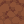
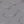
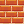

Dirt
Grass (Top)

Stone

Bricks

Wood
Glass
Camera Issues: Press F5 to switch between first-person and third-person views. Press ESC to ensure game focus.
Missing Textures: If textures are missing, verify they exist in both assets/blocks/ and public/blocks/ directories.
Player Movement: Click in the game window and use WASD to move. If not working, press ESC, then click in the game again.
These are some of the common block types used in the game:
For proper texture loading:
public/blocks/[blockname].pngpublic/blocks/[blockname]/[face].png where face is +x, -x, +y, -y, +z, -zmap.json should use the format blocks/[filename] without ./ or assets/ prefixesSome blocks may have corrupted texture paths in the map definition. The server tries to fix these automatically, but you may need to manually update your textures.